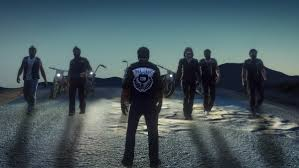
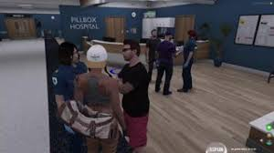
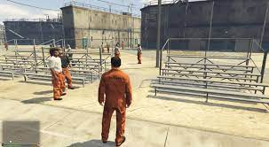
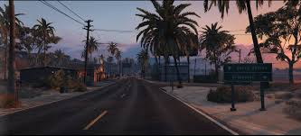

Les base du roleplay
le roleplay dans gta permet de jouer en communauté sur le jeu en incarnant un personnage.
voici quelque information a savoir sur se roleplay
En quoi consiste le role play
Le Roleplay est une façon de jouer qui permet d'incarné son personnage et de jouer un rôle.
votre personnage est complétement dissocié de vous et peu avoir sa propre personnalité, ses propre envie,ses propre objectif de vie.
votre personnage peut jouer plusieurs metier et menait sa propre carrière dans de nombreux domaine.
définition compléteQuel role jouer dans gta?
dans le jeu gta un grand choix de carrière s'offre a vous
l'avantage du jeu gta es la multitude de choix de carrière pour votre personnage.
vous pouvez incarnée une personne des force de l'ordre, un criminelle,
ou même des metier civil comme devenir journaliste, éboueur,médecin ou bien encore chauffeur de taxi.
mais aussi une multitude de personnalité
et oui dans le roleplay vous pouvez incarnée tout type de personnalité.
vous pouvez vous definir comme trés timide, trés agressif, ou bien encore comme une personne qui ne se soucie de rien.
en plus de cela vous pouvez donner un passer a votre personnage et lui donné des peur que vous devrait jouer(peur de l'eau, peur de conduire...).
les métiersMais attention tout roleplay a des code
le roleplay est une simulation de vie donc vous ne pouvez pas faire n'importe quoi.
votre personnage devra avoir peur de la mort, ou bien encore de pas faire des acte qui n'on pas de sens (ne sautez pas d'un avion sans parachute).
votre personnage devra aussi assumé ses acte (accident, acte criminelle), car tout faut acte peuvent amené a de nouvelle "scéne" (exemple:si vous avez un accident vous devez jouer la douleur, les soin ou autre action necessaire) .
exemple de régle en rpLe vocabulaire pour comprendre plus facilement le Roleplay
- scéne :jouer une situation dans son ensemble avec les reaction approprié au acte passé.
- tempête : le serveur a arreté de fonctionner.
- mal de tête : quand vous etes deconnecter ou que votre ordinateur crash.
- fear rp : simuler la peur dans la scéne, tenir son rp.
- ingame : dans le jeu.
- hrp : quand l'action es en dehors du roleplay ou que les information son obtenu en dehors du jeu.